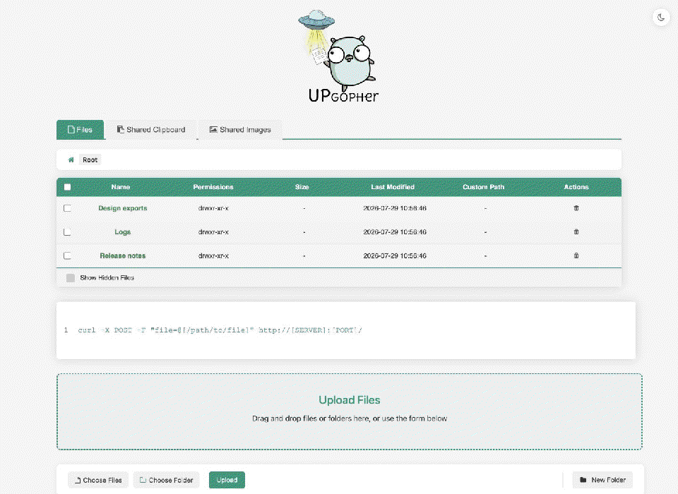
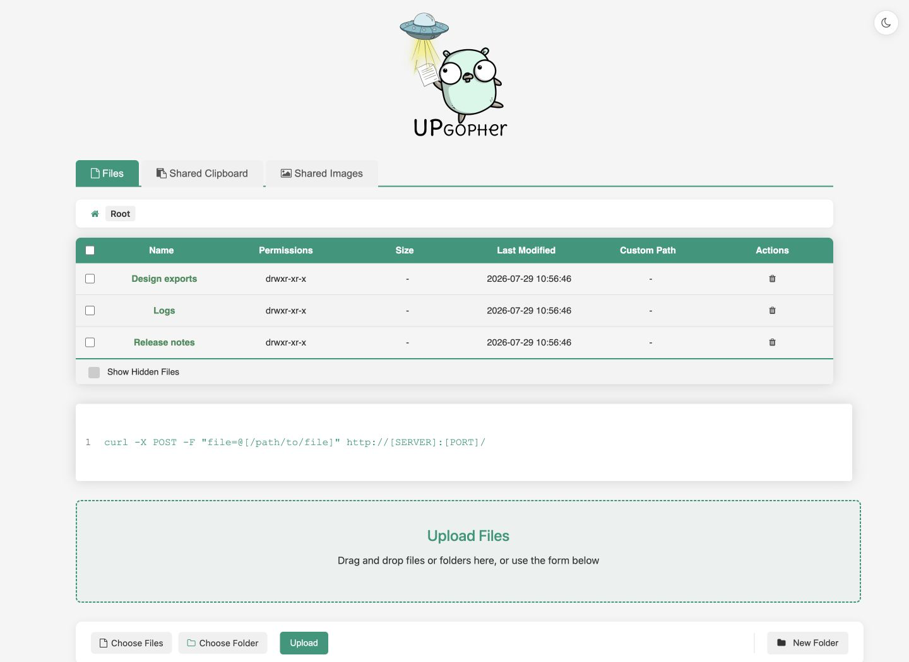
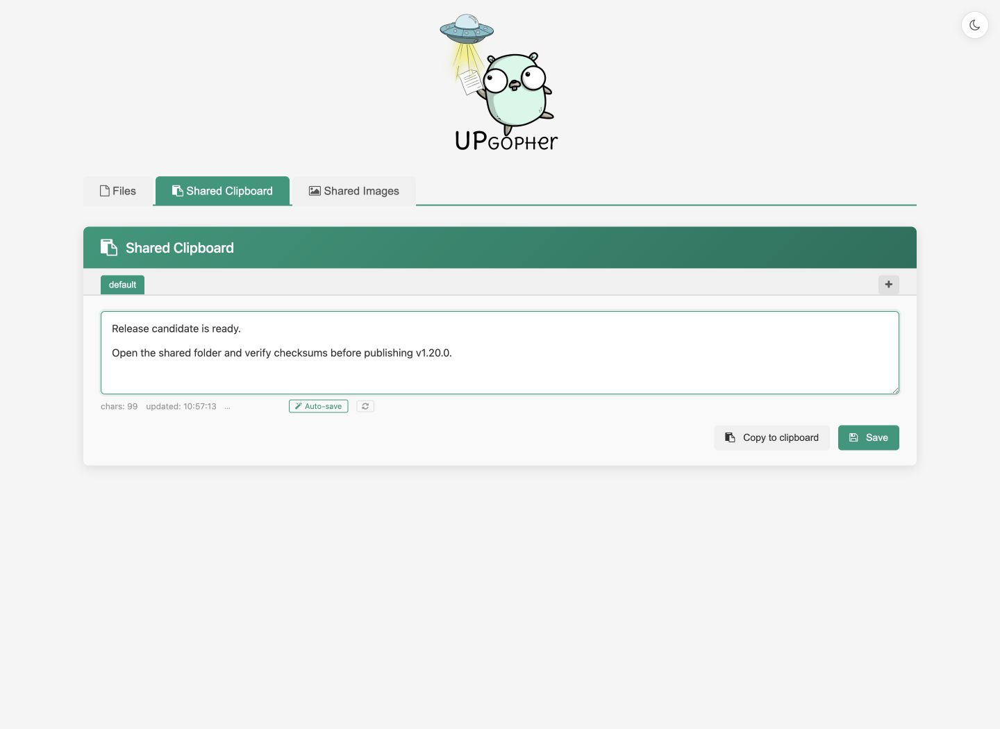
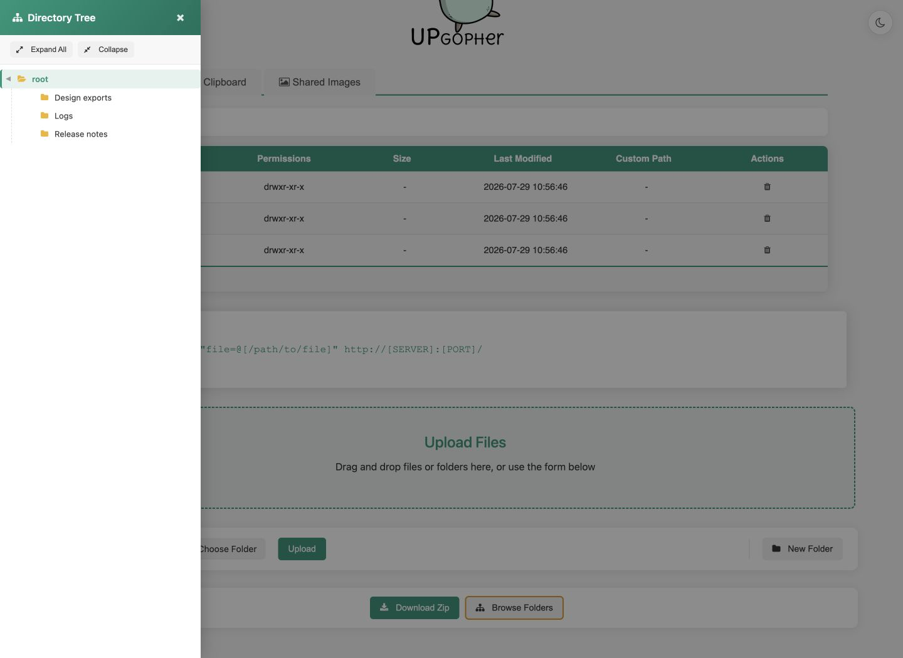
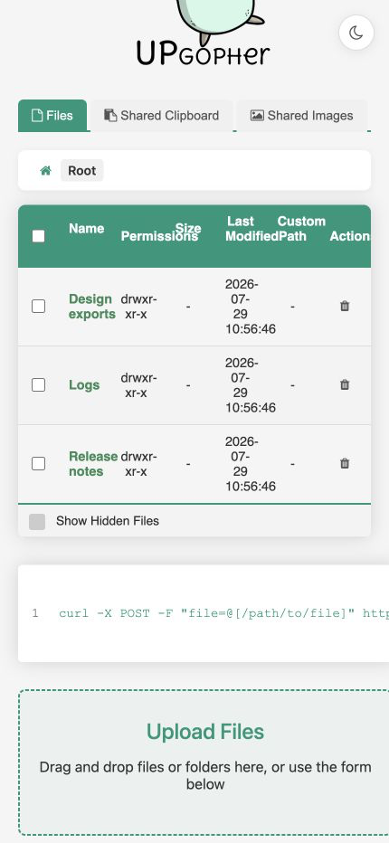

Move files without a client
Open one address from a phone, laptop, VM, or lab machine and start transferring.
Portable file sharing / v1.21.0 preview
Share files, folders, text, and screenshots between devices. No database, external runtime, or configuration file required.

Important update / v1.21.0
Keep the browser you use. Keep the link you share. Upgopher now encrypts file content before it travels through ngrok, Cloudflare Tunnel, trycloudflare, or another HTTP/HTTPS proxy.
Uploads are decrypted at your server. Downloads are decrypted in your browser. One flag enables the encrypted transport for files, ZIPs, previews, search excerpts, and shared images.
upgopher -dir ./shared \
-encrypt-transfers \
-user admin -pass 'your-password'AES-256-GCM · RSA-OAEP · No extra dependencies
Available for testing on dev. Stable release publication follows the merge into main.
Use cases
Upgopher sits between a read-only development server and a full storage platform: enough interface to be useful, little enough infrastructure to start and remove in minutes.
Open one address from a phone, laptop, VM, or lab machine and start transferring.
Share text and screenshots through protected tabs when native clipboard sync is unavailable.
Hand build output, logs, or test artifacts to another device with a single command.
Keep navigation and downloads available while blocking uploads and deletions.
Run it behind a VPN, tunnel, or reverse proxy without adding an application database.
Give a temporary browser UI to people who should not need a shell or transfer tool.
Install
Every method produces the same self-contained server. Package-manager repositories and container images are maintained by the project.
$ brew install --cask wanetty/tap/upgopher $ upgopher -dir ./shared
> scoop bucket add wanetty https://github.com/wanetty/scoop-bucket > scoop install upgopher > upgopher -dir .\shared
$ docker run --rm -p 9090:9090 \
-v "$PWD:/data" wanetty/upgopher:1.20.0
$ go install github.com/wanetty/upgopher@latest $ upgopher -dir ./shared
Interface
Browse folders, upload with progress, download selections as ZIP, search text files, and move clipboard content across screens.




Trade-offs
Upgopher optimizes for a useful browser interface with minimal setup. It is not trying to replace multi-user storage platforms or protocol-rich transfer servers.
| Tool | Setup | Strength | Choose it when… |
|---|---|---|---|
| Upgopher | One binary | Files + shared clipboard | You want a practical browser UI without a database or config file. |
| python http.server | Python runtime | Read-only serving | You only need to expose local files briefly. |
| Dufs | One binary | WebDAV + resumable transfers | Transfer protocol support matters more than clipboard sharing. |
| File Browser | Persistent app state | Users + administration | You need accounts, roles, and a managed file portal. |
| Copyparty | Python / bundle | Protocols + advanced transfers | You need resumability, indexing, deduplication, or media features. |